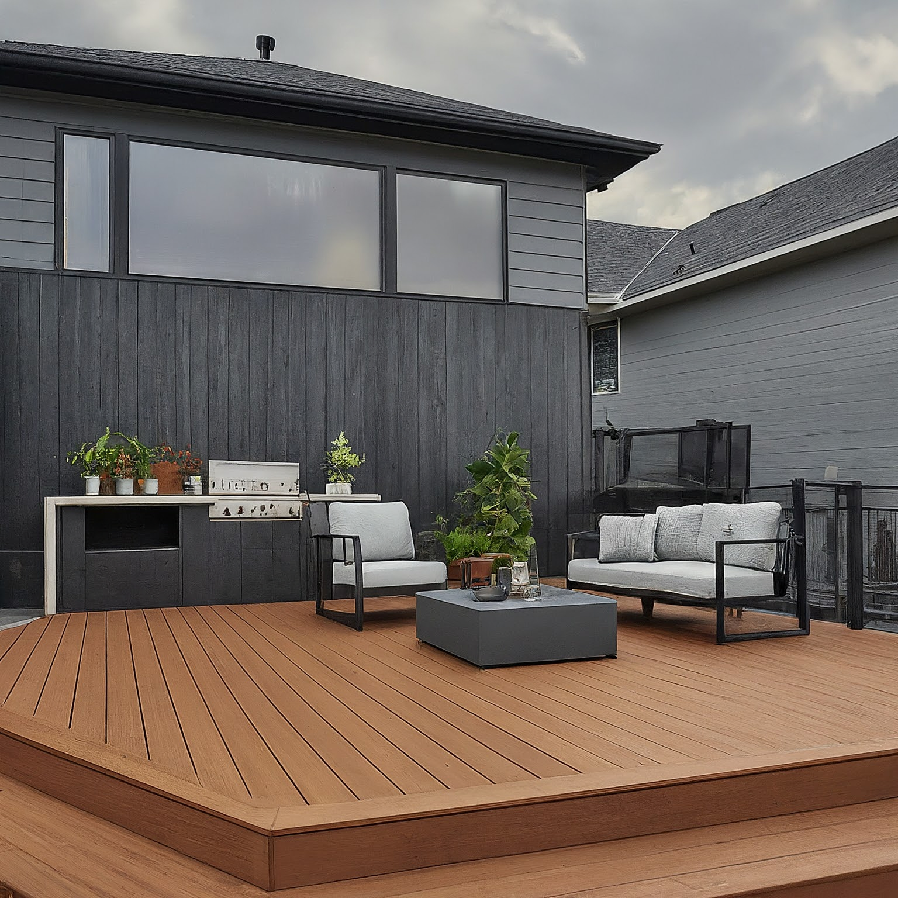
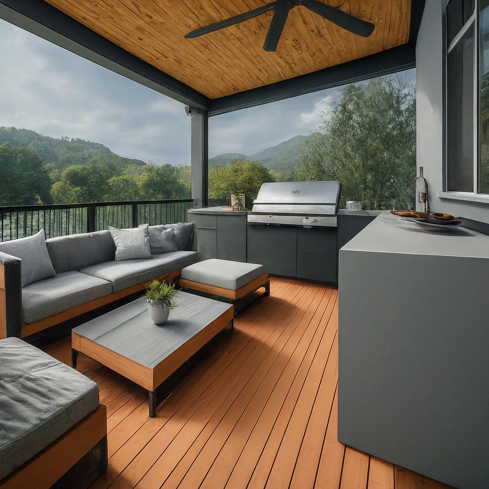
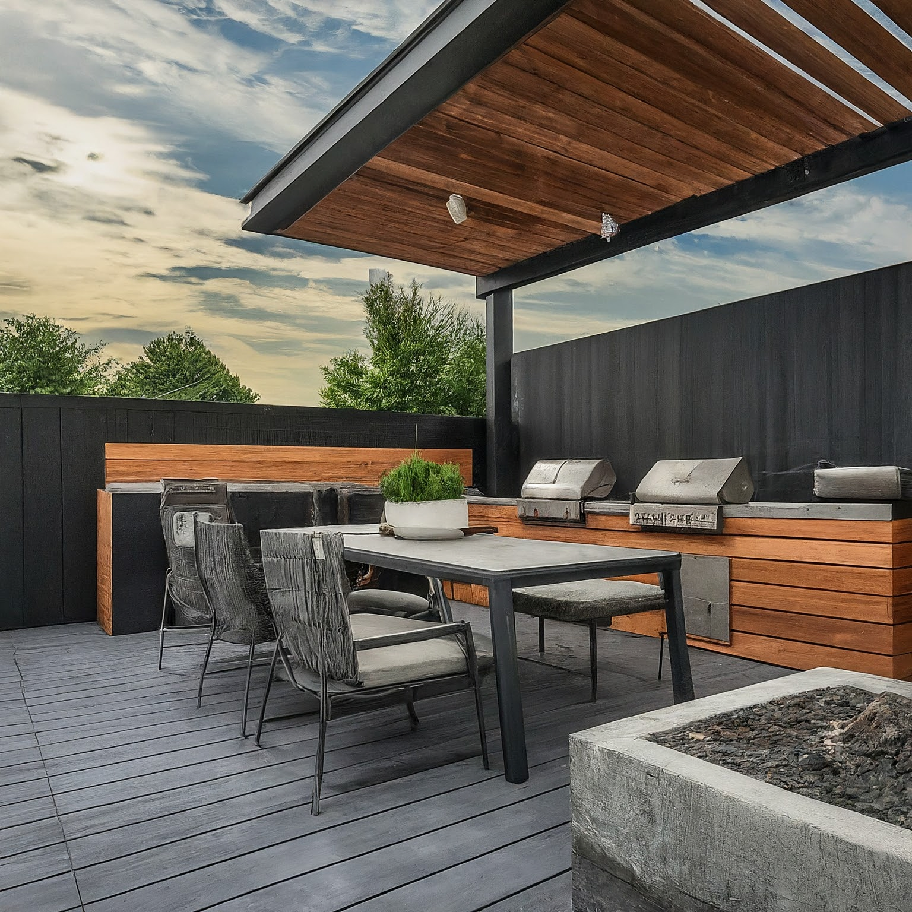
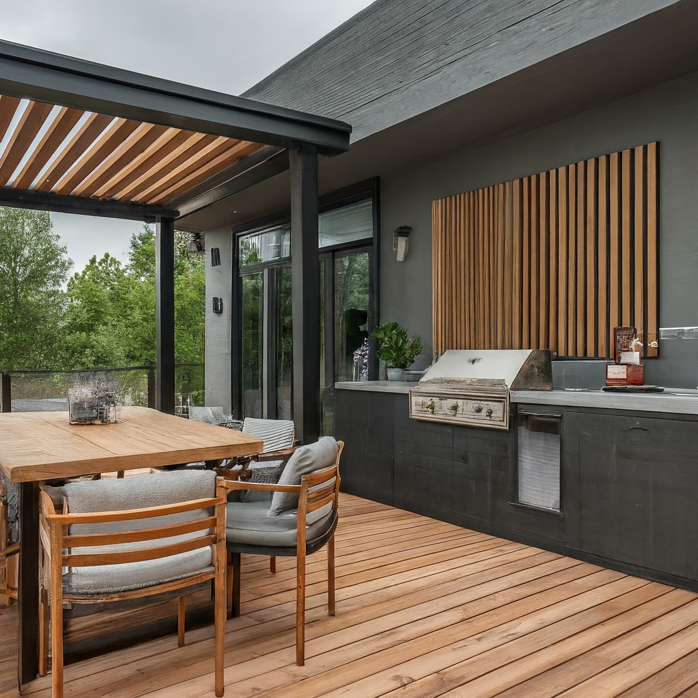

Contemporary Grey, Black & Cedar Deck with Outdoor Kitchen Design Concept

Contemporary Grey, Black & Cedar Deck with Outdoor Kitchen Design Concept
This design concept aims to create a sophisticated and functional outdoor living space, blending the warmth of cedar with the sleekness of grey and black in a contemporary style. The deck will feature a well-equipped outdoor kitchen, comfortable seating areas, and integrated lighting to create an inviting atmosphere for both daytime relaxation and evening entertaining. The goal is a space that is both aesthetically pleasing and practical, seamlessly extending the indoor living space outdoors.
1. Overall Concept and Style
- Style: Contemporary, emphasizing clean lines, geometric shapes, and minimalist design. The design will avoid excessive ornamentation and focus on the interplay of textures and colors.
- Concept: The deck will be divided into distinct zones: a cooking/prep zone, a dining zone, and a lounge zone. Each zone will be thoughtfully designed to maximize its functionality and visual appeal. The overall feel will be modern, uncluttered, and inviting, providing a seamless transition between indoor and outdoor living.
- Flow: The layout will prioritize smooth circulation between zones, facilitating easy movement for cooking, serving, and socializing.
2. Color Scheme and Materials
- Color Palette:
- Grey: Forms the base color for the deck flooring, kitchen cabinetry, and some furniture pieces. Consider a medium to dark grey with slight warm undertones to prevent a cold feeling. Examples: Benjamin Moore Iron Mountain, Sherwin Williams Dovetail.
- Black: Used as an accent color for hardware, lighting fixtures, outdoor kitchen countertops, and furniture frames. Black adds contrast and defines the edges of the space.
- Cedar Brown: Provides warmth and natural texture. This will be incorporated through cedar decking (as an accent), cedar cladding on the kitchen island, and potentially in some furniture details. Ideally a natural, lightly stained cedar to show off the grain.
- Materials:
- Decking: Composite decking in a grey tone for durability and low maintenance. Consider incorporating sections of natural cedar decking for visual interest or as a frame around the perimeter. Ensure the composite decking color coordinates with the overall scheme.
- Outdoor Kitchen Countertops: Durable, weather-resistant material like concrete (sealed), granite (black or charcoal), or quartz.
- Cabinetry: Weatherproof outdoor-rated cabinetry in a dark grey or black finish. Materials like stainless steel with a powder-coated finish or resin-based materials are suitable.
- Cladding: Cedar planks for cladding the kitchen island or a feature wall. Use a clear sealant to protect the wood from the elements and maintain its natural color.
- Furniture: Weather-resistant materials like aluminum frames with sling seating, resin wicker, or teak. Upholstery should be made of outdoor-rated fabrics.
- Paving (if applicable): If there's a transition from the deck to a patio area, consider using large format grey pavers.
3. Furniture and Layout
- Outdoor Kitchen Zone:
- Layout: A built-in outdoor kitchen island with a grill, side burner, sink, and storage cabinets. The island should be positioned to allow easy access to the dining area and provide sufficient workspace for food preparation.
- Appliances: High-quality stainless steel grill, side burner, and outdoor refrigerator.
- Storage: Drawers and cabinets for storing cooking utensils, pots, pans, and other outdoor kitchen essentials.
- Dining Zone:
- Table: A rectangular or square dining table that comfortably seats 6-8 people. Consider a table with a grey aluminum frame and a composite top or a teak table.
- Chairs: Contemporary dining chairs with weather-resistant frames and comfortable cushions. Choose a design that complements the table and the overall style.
- Lounge Zone:
- Seating: A comfortable outdoor sofa or sectional with weatherproof cushions. Consider incorporating one or two lounge chairs for added seating flexibility.
- Coffee Table: A low coffee table made of durable materials like concrete, aluminum, or teak.
- Optional: An outdoor rug in a neutral color to define the lounge zone and add a touch of comfort.
- Layout Considerations:
- Maintain adequate circulation space between zones.
- Position the furniture to take advantage of views and minimize exposure to wind.
- Consider the placement of utilities (gas line, water line, electrical outlets) when planning the layout.
4. Lighting Design
- Ambient Lighting:
- Recessed LED lights: Installed in the deck surface to provide subtle ambient lighting.
- String lights: Strung above the dining or lounge area to create a festive atmosphere. Choose LED string lights for energy efficiency.
- Task Lighting:
- Under-cabinet lighting: Installed beneath the outdoor kitchen cabinets to illuminate the countertop workspace.
- Grill light: Integrated into the grill for cooking in low-light conditions.
- Accent Lighting:
- Spotlights: Used to highlight architectural features or landscaping elements.
- Path lighting: Used to illuminate walkways and pathways.
- Lighting Fixtures: Choose contemporary-style lighting fixtures with a black or dark grey finish. Ensure all lighting fixtures are rated for outdoor use.
- Dimming: Incorporate dimmers for ambient and accent lighting to create different moods.
5. Decorative Elements
- Planters: Large concrete or ceramic planters with drought-tolerant plants like succulents, grasses, or herbs. Use planters to define zones, add greenery, and soften the hard edges of the deck.
- Throw Pillows: Outdoor-rated throw pillows in shades of grey, black, and cedar brown. Choose pillows with varying textures and patterns to add visual interest.
- Outdoor Art: Weather-resistant artwork, such as metal sculptures or framed prints, can add a personal touch to the deck.
- Fire Feature (Optional): A gas fire pit or fire table can serve as a focal point and provide warmth on cool evenings. Choose a contemporary-style fire feature with a clean design.
- Textiles: Outdoor throws and rugs in textured materials that complement the color scheme.
6. Practical Considerations
- Weather Protection: Consider adding a retractable awning or pergola to provide shade and shelter from the rain.
- Storage: Incorporate ample storage solutions for outdoor cushions, grill covers, and other accessories.
- Drainage: Ensure proper drainage on the deck to prevent water from pooling.
- Maintenance: Choose low-maintenance materials that are easy to clean and resistant to fading and mildew.
- Safety: Install handrails and guardrails that meet building code requirements. Provide adequate lighting to prevent tripping hazards.
- Accessibility: Consider accessibility needs when designing the layout. Ensure that there are no tripping hazards and that pathways are wide enough for wheelchairs or walkers.
- Pest Control: Take measures to prevent insects from nesting on the deck. Consider using insect repellent candles or sprays.
- Local Building Codes: Ensure the design complies with all local building codes and regulations.
- Budget: Establish a budget and prioritize key elements of the design.
- Professional Help: Consider consulting with a landscape designer or architect for assistance with the design and construction of the deck and outdoor kitchen.

Contemporary Grey, Black & Cedar Deck with Outdoor Kitchen Design Concept - View 2

Contemporary Grey, Black & Cedar Deck with Outdoor Kitchen Design Concept - View 3

Contemporary Grey, Black & Cedar Deck with Outdoor Kitchen Design Concept - View 4